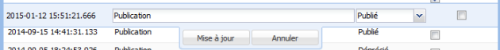
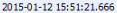
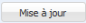
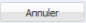

Édition d'une Version
ÉcranÉditer une version⚓
RéglementaireAfficher la liste des versions⚓
Sélectionnez l'onglet Versions de la Fiche vocabulaire.
- 1 Version en cours d'édition
Double-cliquez sur la ligne d'une version pour l'éditer.
- 2 Date de version
Une version est identifiée grâce à sa date et son heure de création. Cette information est ajoutée automatiquement et n'est pas modifiable.
- 3 Note de version
Saisissez une note permettant de caractériser, détailler la version.
- 4 Statut
Sélectionnez le
Statutde la version dans la liste déroulante.RéglementaireStatuts disponibles⚓
Projet
Validé
Publié
Déprécié
Prohibé
- 5 Version courante

Cochez la case de la version qui est la
Version courantedu vocabulaire ; c'est à dire la version publiée. - 6 Mise à jour
Cliquez sur le bouton
Mise à jourpour valider les modifications de la version.Cliquez ensuite sur le bouton

Enregistrerpour sauvegarder vos modifications.
- 7 Annuler
Cliquez sur le bouton
Annulerpour abandonner les modifications de la version.Cliquez ensuite sur le bouton
Enregistrerpour confirmer l'abandon des modifications.